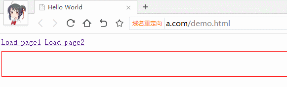

现在都流行单页应用，即点击链接局部更新页面（非整体刷新），并且产生历史管理。 局部刷新很容易实现，ajax可以满足我们的需要，但是这并不会产生历史管理，下面介绍几种方式实现这种效果。
通过hash实现
在HTML5的History API出现之前，前端的路由都是通过hash来实现的，同时hash能兼容低版本的浏览器。
Hash就是url#号后面的内容，首先Web服务并不会解析 hash，也就是说#后的内容Web服务都会自动忽略,但是 JavaScript是可以通过window.location.hash读取到的，读取到路径加以解析之后就可以响应不同路径的逻辑处理。
<ul>
<li><a href="#/">首页</a></li>
<li><a href="#/page1">page1</a></li>
<li><a href="#/page2">page2</a></li>
</ul>
//监听地址变换
<script>
window.onhashchange = function(){
var hashurl = window.location.hash;
//根据hashurl后台获取数据
//用获得的数据渲染页面
}
</script>
这样就实现了单页的数据加载渲染，同时支持浏览器的前进后退。如果需要更加强大匹配hash匹配规则可以使用一些框架或者自己封装一个简单的框架重复利用。

通过History API
HTML5新增的历史记录API可以实现无刷新更改地址栏链接，配合AJAX同样可以做到无刷新跳转。
思路：首先绑定click事件。当用户点击一个链接时，通过preventDefault函数防止默认的行为（页面跳转），同时读取链接的地址，把这个地址通过pushState塞入浏览器历史记录中，再利用 AJAX 技术拉取这个地址中真正的内容，同时替换当前网页的内容。
为了处理用户前进、后退，需要监听popstate事件。从事件对象里面取出之前放进去的数据，再次渲染到页面即可。
最后，整个过程是不会改变页面标题的，可以通过直接对document.title赋值来更改页面标题
window.history.pushState
将当前URL和history.state加入到history中，并用新的state和URL替换当前。不会造成页面刷新。
接收三个参数
-
state：与要跳转到的URL对应的对象，自定义的，可以取出
-
title：页面的题目,假如没有就穿空字符串就可以，没啥效果
-
url：要跳转到的URL地址，不能跨域
//阻止链接的默认行为，同时得到url
//ajax获取url对应的数据
window.history.pushState({"html":html,"pageTitle":pageTitle},null, url);
document.title = pageTitle;
//渲染页面
监听window.onpopstate
当活动历史记录条目更改时（非window.history.pushState产生的变化），将触发popstate事件。如果被激活的历史记录条目是通过对history.pushState（）的调用创建的，或者受到对history.replaceState（）的调用的影响，popstate事件的state属性包含历史条目的状态对象的副本
window.onpopstate = function(event){
var state= event.state;
//取出state里面的数据
var html = state.html;
document.title = state.pageTitle;
//渲染页面
};
比如window.history.pushState产生一个记录
history.go(-1) 回到上一个记录，触发onpopstate
history.go(1) 还原记录，onpopstate，由于该记录是pushState产生的，可以拿到window.history.pushState时存放的state
window.history.replaceState
有时，你希望不添加一个新记录，而是替换当前的记录，则可以使用replaceState方法。这个方法和pushState的参数完全一样。没有记录时会创建一个记录。
一些问题
-
页面刷新问题
当前进几次后，有些用户会习惯性的刷新页面，这时得到的是数据页面。 解决方式有三种，一种是ajax的请求和浏览器的请求使用不同的方式，比如GET/POST，后端根据请求不同确定反馈数据还是页面。 再一种是再ajax的请求时对url进行处理（比如变成/api/url），后端对新url返回数据，对正常url返回页面。 还有可以后端始终反馈页面，ajax得到页面后截取一需要的部分。